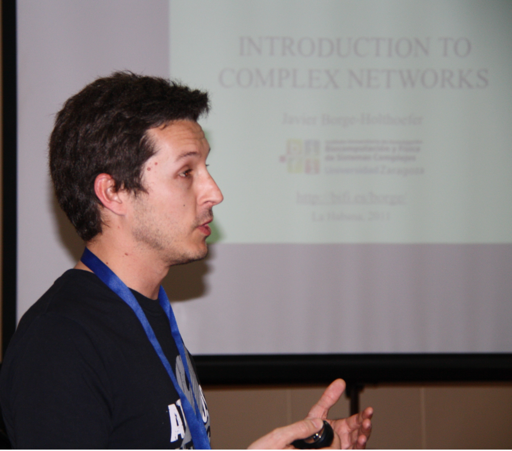

Veracity of Big Data
Laure Berti-Equille and Javier Borge-Holthoefer
(Qatar Computing Research Institute)
CIKM 2015 Tutorial on Monday October 19th, 2015
Truth Discovery and Misinformation Dynamics in the Web
The evolution of the Web from a technology platform to a social ecosystem has resulted in unprecedented data volumes being continuously generated, exchanged, and consumed. User-generated content on the Web is massive, highly dynamic, and characterized by a combination of factual data and opinion data.
False information, rumors, and fake contents across multiple sources can be easily spread, making it hard to distinguish between what is true and what is not. Truth discovery also called fact-checking has recently gained lot of interest in Data Science communities.
Ascertaining the veracity of data and understanding the dynamics of misinformation in the Web are two inter-dependent challenges for researchers and practitioners in Databases, Information Retrieval, and Knowledge Management.
We will review in details current models, algorithms, and techniques proposed by various research communities in Complex System Modeling, Data Management, and Knowledge Discovery, for ascertaining the veracity of data in a dynamic world.
Finally, this tutorial will identify a wide range of open problems and research directions for discovering truth from falsehood(s) in the Web Data and understanding the evolution and propagation of information source trustworthiness.
Audience
The tutorial is of particular relevance to:- Students, academic researchers, and practitioners in databases, information retrieval, social complex systems, and more broadly data sciences
- Business and quantitative analysts in the fields of knowledge and information management, statistics, and social network analysis from a wide range of industrial, commercial and scientific applications (e.g., journalism, social media, marketing and finance)
- Users of social networks and social media
- Software engineers of large databases and social networks that use, design or develop tools for data import, integration and analytics
- Those interested in accuracy, truthfulness ofWeb sources and veracity of user-generated content in the Web of Data.
Outline
The tutorial will start with a variety of real-world examples illustrating the importance of checking veracity of online information and understanding the dynamics of rumors and fake contents.
The problem of truth discovery is intellectually and technically interesting enough to have attracted a lot of prior studies from many communities from artificial intelligence, database to information extraction communities, sometimes investigated under the names of "fact-checking", "information trustworthiness", "information credibility", "information corroboration" or "data fusion". In the first part of the tutorial, we will provide a comprehensive survey of existing models and algorithms for truth discovery computation illustrated by many examples.
We will present the main line of research which aimed at iteratively computing and updating the trustworthiness of a source as a function of the belief in its claims, and then the belief score of each claim as a function of the trustworthiness of the sources asserting it. In this research line, several probabilistic and optimization-based models will be presented to highlight various aspects beyond source trustworthiness and claim belief that have been incoporated to enhance initial models.
This second part will provide a broad outline of past and recent theoretical research, mainly from Statistical Physics, around diffusion dynamics on networked systems (e.g., SIS and SIR models) and we will review work related to influence, rumour reach prediction, meme tracking and information mutation. It will also illustrate how real-world data have already begun to modify such idealized setups, launching a converging research avenue for both communities in data management and complex systems research.
Finally, we will end the tutorial by discussing cutting-edge open problems for discovering truth in settings where information from multiple sources and media is rapidly evolving, eventually distorted, and propagated. This tutorial will review the challenges of truth discovery in the Web with awareness of misinformation dynamics. We will discuss how close we are to meeting these challenges and identify various open problems for future research in the data management community and beyond. Truth discovery and misinformation dynamics give clear opportunities to the CIKM community for cutting-edge research in information and knowledge management to ultimately design systems that effectively support the fourth "V" (Veracity) of Big Data.
-

Laure Berti-Equille
Laure is a Senior Scientist at Qatar Computing Research Institute (QCRI) since 2013. Prior joining QCRI, Laure was a Directeur de Recherche at IRD, the French Institute of Research for Development, a visiting researcher at AT&T Labs-Research (NJ, USA) with a Marie Curie fellowship of the European Commission in 2007 and a tenured associate professor at University of Rennes 1 (France) from 2000 to 2010.
Her research interests focus on developing novel data management and analytics techniques for data integration, truth discovery, and anomaly detection. She has published one monograph, several book chapters, and over 80 research papers in refereed journals and conferences. She has served in the organization and program committees of over 50 international conferences and workshops.
-

Javier Borge-Holthoefer
Javier, currently a Scientist at the Qatar Computing Research Institute (QCRI), received a Ph.D. in Computer Science from the Universitat Rovira i Virgili (URV) in Tarragona (Catalonia, Spain) in 2011. Founded on interdisciplinary Physics, his research is focused on complex systems ranging from Cognitive Dynamics to Social Networks. Among other appointments, he taught at the Department of Computer Science and Mathematics and at the Department of Psychology (both in URV). Before moving to Qatar in 2014, he was a member of the COSNET Lab and held a position as a post-doctoral fellow at the Institute for Biocomputation and Physics of Complex Systems (BIFI), which belongs to the University of Zaragoza (Spain).
With more than 20 peer-reviewed articles, his work has been published (among others) in the EPJ Data Science, Physical Review E, PLoS One, Scientific Reports or Europhysics Letters. Dr. Borge-Holthoefer has also contributed three chapters in different books around the problem of disease and information spreading on complex networks.